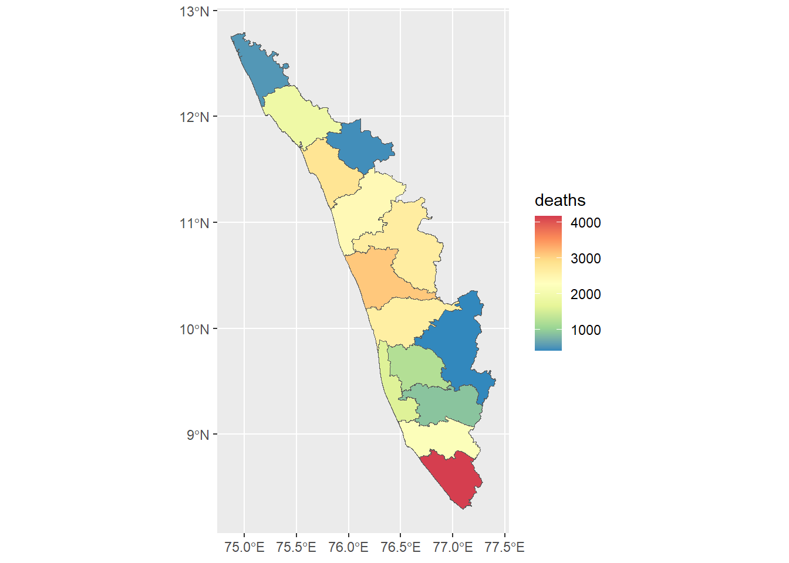
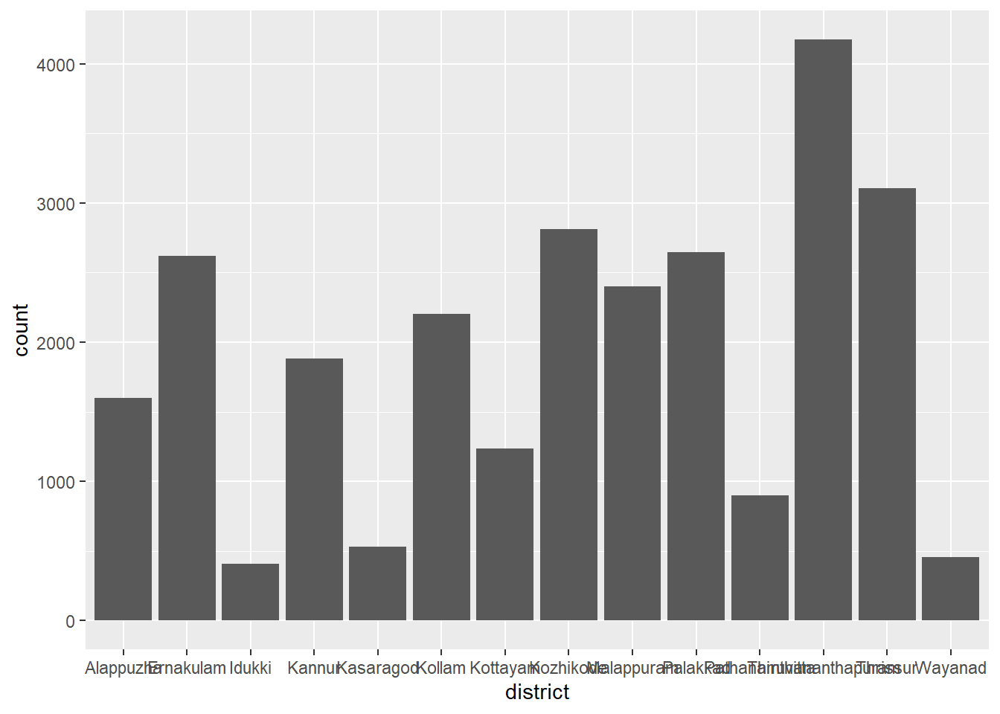

Code
library(tidyverse)
library(here)
library(rio)
library(gtsummary)The dataset contains information on the deaths due to COVID-19 in 14 districts of Kerala state. This information is available for download from the Government of Kerala COVID-19 Dashboard (https://dashboard.kerala.gov.in/covid/
Load packages tidyverse, here, and rio.
library(tidyverse)
library(here)
library(rio)
library(gtsummary)Import the dataset using rio package.
# define file path
df_path<- here::here("data","kerala_covid_deaths.rds")
# read data
df <- rio::import(here(df_path))hint:snake_case
df <- df %>%
janitor::clean_names()
names(df)[1] "sl_no" "date_reported"
[3] "district" "name"
[5] "place" "age"
[7] "sex" "date_of_death"
[9] "history_traveler_contact"Hint: Explore different functions like class, str.
df %>%
class()[1] "tbl_df" "tbl" "data.frame"df %>%
str()tibble [26,982 × 9] (S3: tbl_df/tbl/data.frame)
$ sl_no : num [1:26982] 1 2 3 4 5 6 7 8 9 10 ...
$ date_reported : Date[1:26982], format: "2021-10-21" "2021-10-21" ...
$ district : Factor w/ 14 levels "Alappuzha","Ernakulam",..: 12 12 12 12 12 12 12 12 12 12 ...
$ name : chr [1:26982] "Anu john b" "Dinamony k" "Govinda pillai" "I danam" ...
$ place : chr [1:26982] "Kattakada" "Kilimanoor" "Pallichal" "Thiruvananthapuram" ...
$ age : num [1:26982] 31 87 77 65 49 88 72 74 58 55 ...
$ sex : Factor w/ 2 levels "Male","Female": 1 1 1 1 1 1 1 1 2 1 ...
$ date_of_death : Date[1:26982], format: "2021-10-14" "2021-10-08" ...
$ history_traveler_contact: logi [1:26982] NA NA NA NA NA NA ...“sl_no”, “name”, “place”, “history_traveler_contact”
Hint: select() could be used.
df <- df %>%
select(-c("sl_no", "name", "place", "history_traveler_contact"))
view(df)Write an R code to look at the number of rows and columns.
Hint: explore nrow(), ncol(), glimpse()
df %>%
dim()[1] 26982 5df %>%
nrow()[1] 26982df %>%
ncol()[1] 5df %>%
glimpse()Rows: 26,982
Columns: 5
$ date_reported <date> 2021-10-21, 2021-10-21, 2021-10-21, 2021-10-21, 2021-10…
$ district <fct> Thiruvananthapuram, Thiruvananthapuram, Thiruvananthapur…
$ age <dbl> 31, 87, 77, 65, 49, 88, 72, 74, 58, 55, 88, 87, 58, 57, …
$ sex <fct> Male, Male, Male, Male, Male, Male, Male, Male, Female, …
$ date_of_death <date> 2021-10-14, 2021-10-08, 2021-10-18, 2021-10-17, 2021-10…df %>% as_tibble()# A tibble: 26,982 × 5
date_reported district age sex date_of_death
<date> <fct> <dbl> <fct> <date>
1 2021-10-21 Thiruvananthapuram 31 Male 2021-10-14
2 2021-10-21 Thiruvananthapuram 87 Male 2021-10-08
3 2021-10-21 Thiruvananthapuram 77 Male 2021-10-18
4 2021-10-21 Thiruvananthapuram 65 Male 2021-10-17
5 2021-10-21 Thiruvananthapuram 49 Male 2021-10-11
6 2021-10-21 Thiruvananthapuram 88 Male 2021-10-17
7 2021-10-21 Thiruvananthapuram 72 Male 2021-09-10
8 2021-10-21 Thiruvananthapuram 74 Male 2021-10-06
9 2021-10-21 Thiruvananthapuram 58 Female 2021-10-12
10 2021-10-21 Thiruvananthapuram 55 Male 2021-10-18
# ℹ 26,972 more rowsHint: glimpse, skimr::skim(), tbl_summary()
df %>%
glimpse()Rows: 26,982
Columns: 5
$ date_reported <date> 2021-10-21, 2021-10-21, 2021-10-21, 2021-10-21, 2021-10…
$ district <fct> Thiruvananthapuram, Thiruvananthapuram, Thiruvananthapur…
$ age <dbl> 31, 87, 77, 65, 49, 88, 72, 74, 58, 55, 88, 87, 58, 57, …
$ sex <fct> Male, Male, Male, Male, Male, Male, Male, Male, Female, …
$ date_of_death <date> 2021-10-14, 2021-10-08, 2021-10-18, 2021-10-17, 2021-10…df %>%
skimr::skim()| Name | Piped data |
| Number of rows | 26982 |
| Number of columns | 5 |
| _______________________ | |
| Column type frequency: | |
| Date | 2 |
| factor | 2 |
| numeric | 1 |
| ________________________ | |
| Group variables | None |
Variable type: Date
| skim_variable | n_missing | complete_rate | min | max | median | n_unique |
|---|---|---|---|---|---|---|
| date_reported | 0 | 1 | 2020-08-17 | 2021-10-21 | 2021-07-04 | 431 |
| date_of_death | 0 | 1 | 2019-06-18 | 2021-10-21 | 2021-06-28 | 449 |
Variable type: factor
| skim_variable | n_missing | complete_rate | ordered | n_unique | top_counts |
|---|---|---|---|---|---|
| district | 0 | 1 | FALSE | 14 | Thi: 4173, Thr: 3106, Koz: 2813, Pal: 2645 |
| sex | 0 | 1 | FALSE | 2 | Mal: 15787, Fem: 11195 |
Variable type: numeric
| skim_variable | n_missing | complete_rate | mean | sd | p0 | p25 | p50 | p75 | p100 | hist |
|---|---|---|---|---|---|---|---|---|---|---|
| age | 0 | 1 | 67.65 | 14.03 | 0 | 59 | 69 | 78 | 121 | ▁▂▇▆▁ |
df %>%
tbl_summary()| Characteristic | N = 26,9821 |
|---|---|
| date_reported | 2020-08-17 to 2021-10-21 |
| district | |
| Alappuzha | 1,599 (5.9%) |
| Ernakulam | 2,621 (9.7%) |
| Idukki | 406 (1.5%) |
| Kannur | 1,884 (7.0%) |
| Kasaragod | 532 (2.0%) |
| Kollam | 2,203 (8.2%) |
| Kottayam | 1,237 (4.6%) |
| Kozhikode | 2,813 (10%) |
| Malappuram | 2,403 (8.9%) |
| Palakkad | 2,645 (9.8%) |
| Pathanamthitta | 902 (3.3%) |
| Thiruvananthapuram | 4,173 (15%) |
| Thrissur | 3,106 (12%) |
| Wayanad | 458 (1.7%) |
| age | 69 (59, 78) |
| sex | |
| Male | 15,787 (59%) |
| Female | 11,195 (41%) |
| date_of_death | 2019-06-18 to 2021-10-21 |
| 1 Range; n (%); Median (IQR) | |
# What does the above output tell you?
class(df)[1] "tbl_df" "tbl" "data.frame"as_tibble(df)# A tibble: 26,982 × 5
date_reported district age sex date_of_death
<date> <fct> <dbl> <fct> <date>
1 2021-10-21 Thiruvananthapuram 31 Male 2021-10-14
2 2021-10-21 Thiruvananthapuram 87 Male 2021-10-08
3 2021-10-21 Thiruvananthapuram 77 Male 2021-10-18
4 2021-10-21 Thiruvananthapuram 65 Male 2021-10-17
5 2021-10-21 Thiruvananthapuram 49 Male 2021-10-11
6 2021-10-21 Thiruvananthapuram 88 Male 2021-10-17
7 2021-10-21 Thiruvananthapuram 72 Male 2021-09-10
8 2021-10-21 Thiruvananthapuram 74 Male 2021-10-06
9 2021-10-21 Thiruvananthapuram 58 Female 2021-10-12
10 2021-10-21 Thiruvananthapuram 55 Male 2021-10-18
# ℹ 26,972 more rowsdf %>%
distinct(district)# A tibble: 14 × 1
district
<fct>
1 Thiruvananthapuram
2 Kollam
3 Pathanamthitta
4 Alappuzha
5 Kottayam
6 Ernakulam
7 Thrissur
8 Palakkad
9 Malappuram
10 Kozhikode
11 Wayanad
12 Kannur
13 Kasaragod
14 Idukki df %>%
count(district)# A tibble: 14 × 2
district n
<fct> <int>
1 Alappuzha 1599
2 Ernakulam 2621
3 Idukki 406
4 Kannur 1884
5 Kasaragod 532
6 Kollam 2203
7 Kottayam 1237
8 Kozhikode 2813
9 Malappuram 2403
10 Palakkad 2645
11 Pathanamthitta 902
12 Thiruvananthapuram 4173
13 Thrissur 3106
14 Wayanad 458Hint: count() ,arrange(), group_by() ,summarise()
df %>%
count(district) %>%
arrange(n)# A tibble: 14 × 2
district n
<fct> <int>
1 Idukki 406
2 Wayanad 458
3 Kasaragod 532
4 Pathanamthitta 902
5 Kottayam 1237
6 Alappuzha 1599
7 Kannur 1884
8 Kollam 2203
9 Malappuram 2403
10 Ernakulam 2621
11 Palakkad 2645
12 Kozhikode 2813
13 Thrissur 3106
14 Thiruvananthapuram 4173deaths_df <- df %>%
group_by(district) |>
summarise(deaths = n()) df %>%
count(date_reported) %>%
arrange(-n) # A tibble: 431 × 2
date_reported n
<date> <int>
1 2021-06-06 227
2 2021-06-02 213
3 2021-08-25 213
4 2021-09-21 213
5 2021-06-07 210
6 2021-06-05 209
7 2021-09-15 208
8 2021-06-13 206
9 2021-05-29 198
10 2021-08-19 197
# ℹ 421 more rowsHint: Explore slice()
df %>%
count(district) %>%
arrange(-n) %>%
slice(1:5)# A tibble: 5 × 2
district n
<fct> <int>
1 Thiruvananthapuram 4173
2 Thrissur 3106
3 Kozhikode 2813
4 Palakkad 2645
5 Ernakulam 2621If yes, how many days is the delay?
Hint: use mutate() to substract the relevant variables from each other, you can try the mean() function
# Hint: use mutate() to substract the relevant variables from each other, you can try the mean() function
df %>%
mutate(
delay = date_reported - date_of_death) %>%
pull(delay) %>%
mean(na.rm = T) %>%
round(1)Time difference of 6.2 daysdf %>%
mutate(
delay = date_reported - date_of_death) %>%
group_by(district) %>%
summarize(
mean_delay = mean(delay, na.rm = T))# A tibble: 14 × 2
district mean_delay
<fct> <drtn>
1 Alappuzha 9.597248 days
2 Ernakulam 10.152614 days
3 Idukki 7.551724 days
4 Kannur 7.351911 days
5 Kasaragod 4.460526 days
6 Kollam 6.452565 days
7 Kottayam 7.047696 days
8 Kozhikode 4.633843 days
9 Malappuram 5.778610 days
10 Palakkad 4.883554 days
11 Pathanamthitta 4.966741 days
12 Thiruvananthapuram 4.978672 days
13 Thrissur 5.018674 days
14 Wayanad 3.742358 daysdf <- df %>%
mutate(
age_group =
ifelse(
age <= 60, "<60 Years",">60 Years"))
view(df)Use a cut off of 2021-04-01
df <- df %>%
mutate(
wave = ifelse(
date_of_death <= "2021-04-01", "First Wave", "Second Wave")) sf packagelibrary(sf)Linking to GEOS 3.9.3, GDAL 3.5.2, PROJ 8.2.1; sf_use_s2() is TRUEkerala_dist_sf <- rio::import(here("data", "kerala_district_sf.rds"))
class(kerala_dist_sf)[1] "sf" "data.frame"deaths_df <- deaths_df |>
mutate(district = case_when(district == "Kasaragod" ~ "Kasargod",
district == "Kozhikode" ~ "Kozhikkode",
T ~ district
))
deaths_sf <- kerala_dist_sf |>
left_join(deaths_df)Joining with `by = join_by(district)`deaths_sf <- st_as_sf(deaths_sf)
deaths_sf |>
ggplot() +
geom_sf(aes(fill = deaths)) +
scale_fill_distiller(palette = "Spectral")
| ASSIGNMENTS |
Answer:
df %>%
ggplot() +
geom_bar(aes(x = district))
Answer:
Answer:
Answer:
:::
Answer:
Answer:
Answer:
| # MEGA BONUS points if you use inline code to achieve this task! |